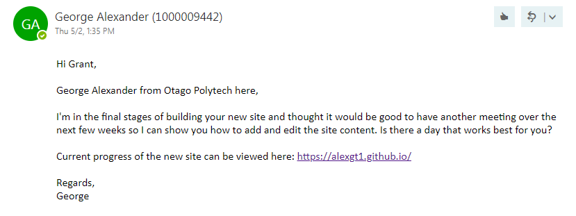
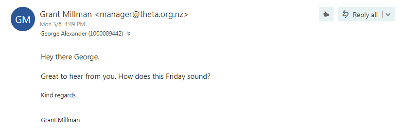

I got in touch with Grant to arrange a second meeting. As I had more a less finished the website I thought it would be appropriate to arrange a follow up meeting with Grant to discuss the site and any further input he might have.


It was a good chance to show him how to use the back end of the website, which was now in CloudCannon as well where to find the documentation I’d prepared for him.
Overall Grant was really pleased with the progress of the site and was stoked to no longer have to deal with the one off fees for site maintenance.
My next and possibly final task for the THETA website is finalizing the registration form. I got Grant to send me an image of what their current contact form looks like when submitted so I have something to go off.
Besides this the websites is complete.
Where to from here?
I will look to arrange a final meeting with Grant to give him and a few other members of THETA a walkthrough of how the site works as well as transfering the domain name to theta.org.nz which they currently use.
Due to time constraints I’m unsure if this meeting will happen during the remaining weeks of term or not.
Overall I have really enjoyed putting the website together and enjoyed dealing with a real life client, this will no doubt give me good experience moving forward.